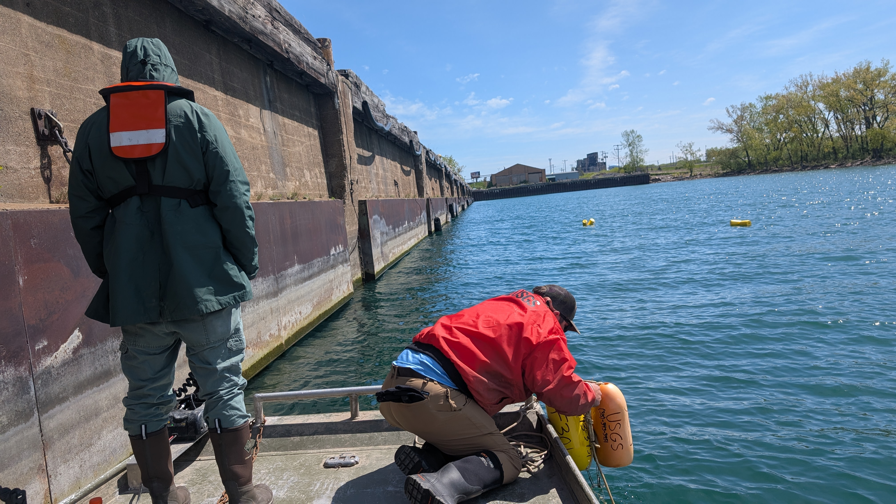
The SUNY Oswego Aquatic Conservation Lab
(Also known as SOAC Lab)
Our Mission
The SUNY Oswego Aquatic Conservation (SOAC) Lab is dedicated to protecting our regional natural assets and ensuring the biological integrity of our waters for future generations. By bridging rigorous academic research with real-world stewardship, our interdisciplinary team integrates advanced genetic analysis, ecological fieldwork, and technological innovation to address critical challenges in fishery conservation, native species recovery, and ecosystem security. Working closely with state, federal, and sovereign tribal partners, we apply cutting-edge genomic tools to guide evidence-based management—such as utilizing Parentage-Based Tagging (PBT) to track the recovery of threatened Lake Sturgeon and deploying environmental DNA (eDNA) to monitor invasive threats like Eurasian watermilfoil. Beyond genetic analysis, the SOAC Lab pioneers practical, student-driven technological solutions, including the engineering of cost-effective autonomous underwater drones for spawning reef analysis and the development of AI-driven models for automated fish identification. Through these collaborative initiatives, we provide actionable data that safeguards our Great Lakes ecosystems while empowering the next generation of scientific innovators.
SOAC Lab Core Team
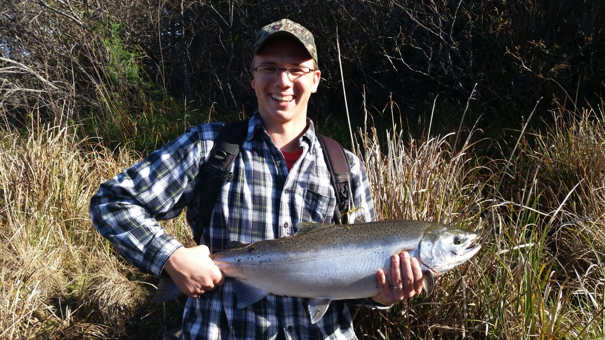

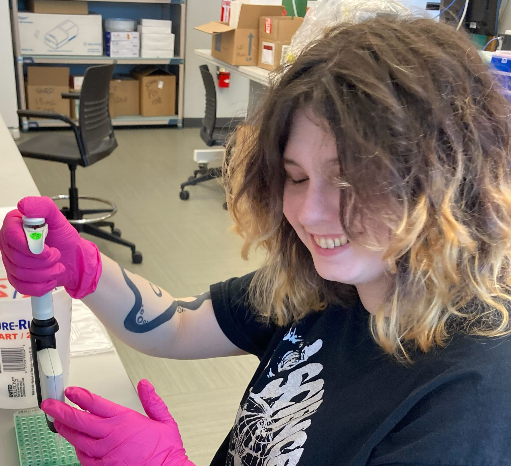
Aquatic Biology & Research Support Team
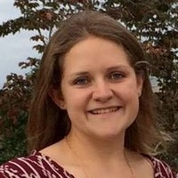
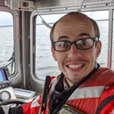

Regional Partners & Tribal Leadership
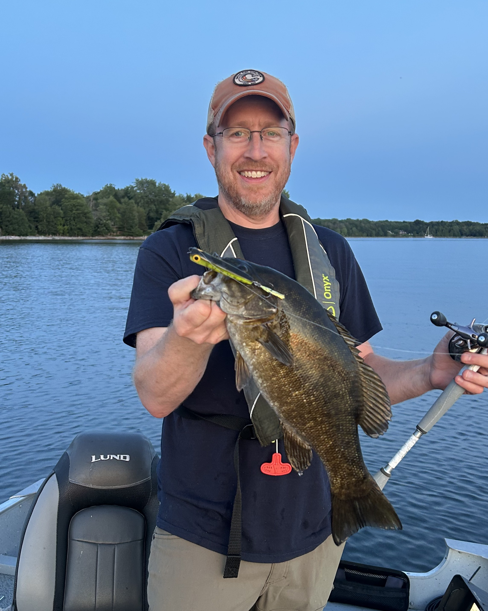
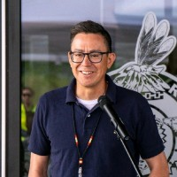
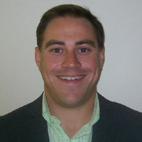
Institutional & NGO Collaborators
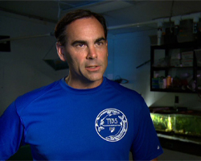
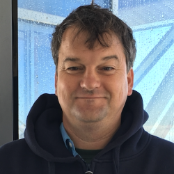
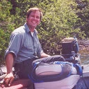
Student Research Team: Investing in Future Leaders
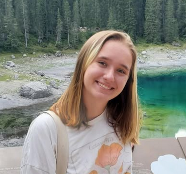
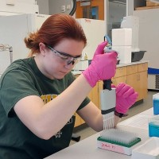

Student Media & Redesign Team: The Frontlines of Engagement
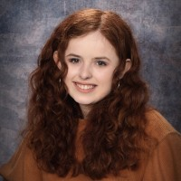
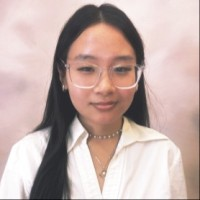
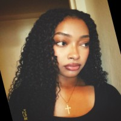

Cross-Disciplinary Collaborators: Innovation through Industry
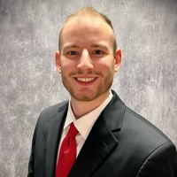
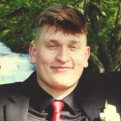